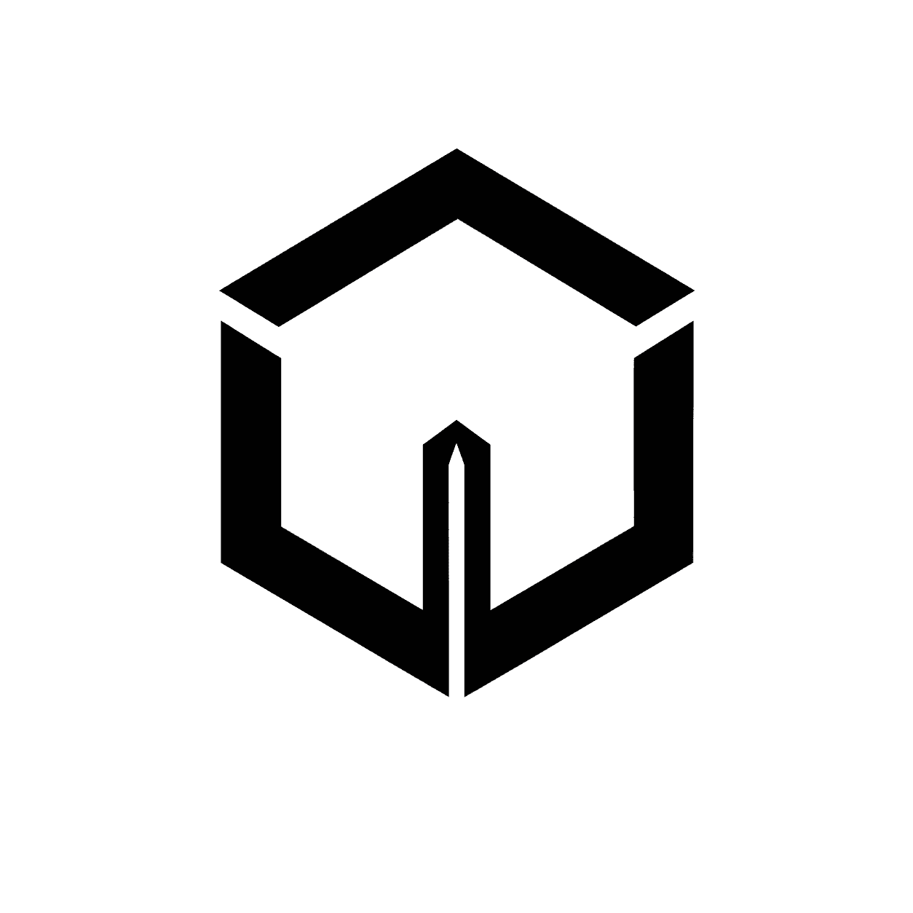

ASCEND

Operational Infrastructure.
Engineered for ownership.
Enter
For D2C growth-stage businesses.
Mapping fulfilment & inventory flows
Wiring data across your stack
Infrastructure ready — enter when you are
Replay